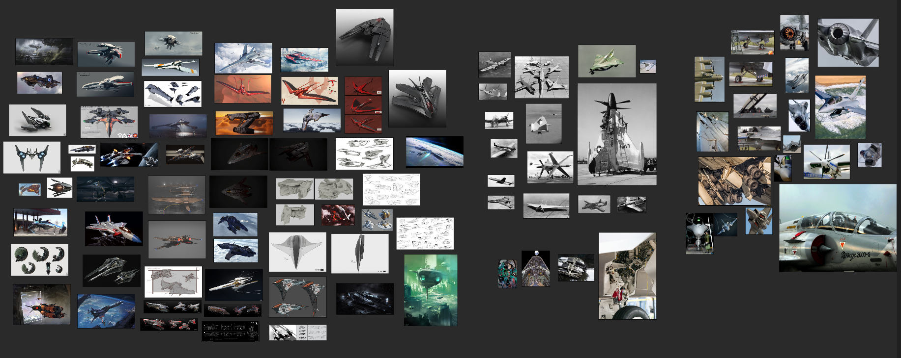
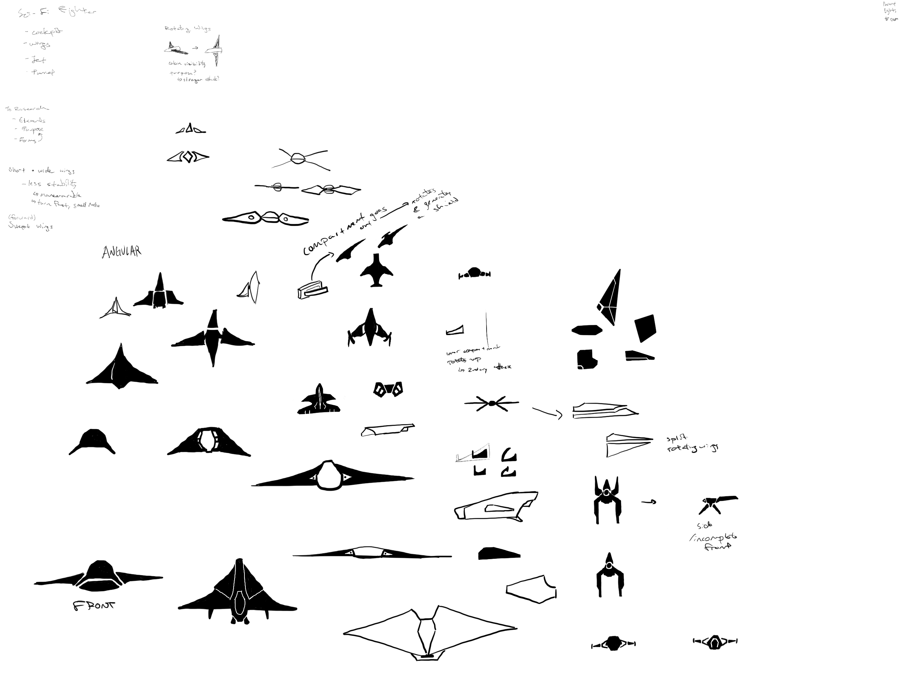
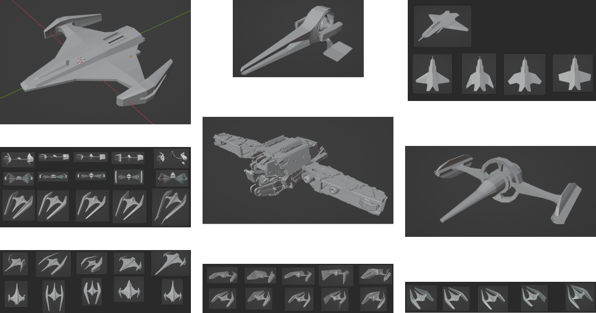
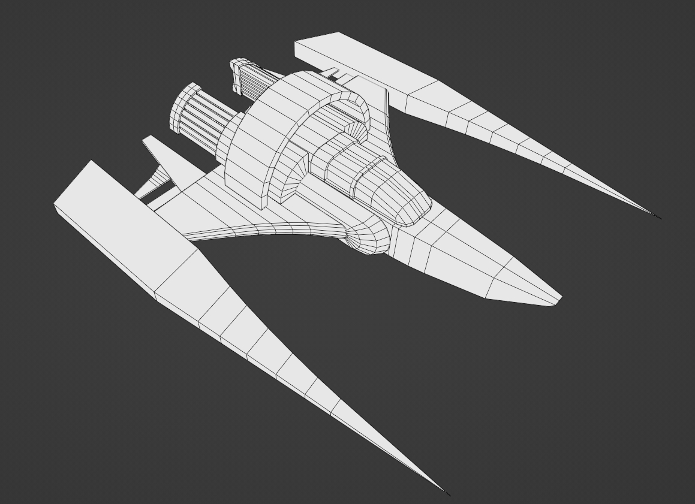
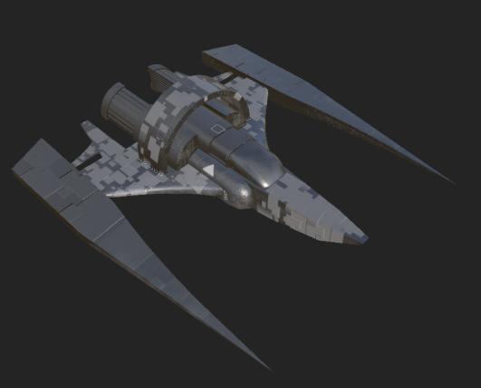
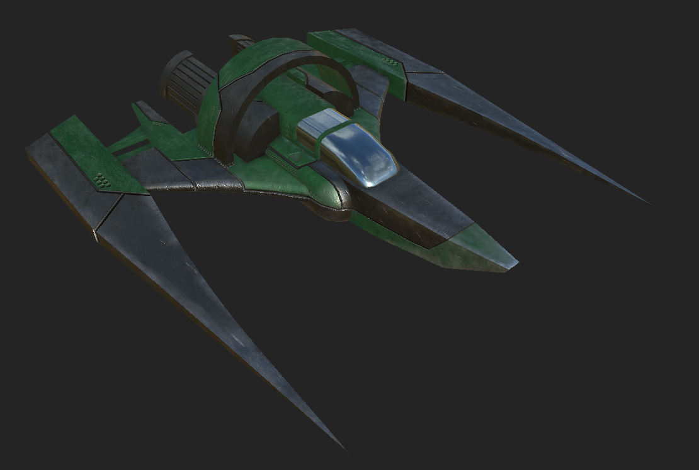
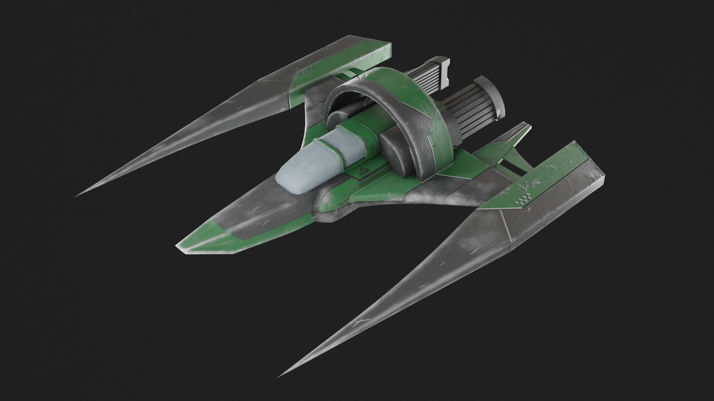
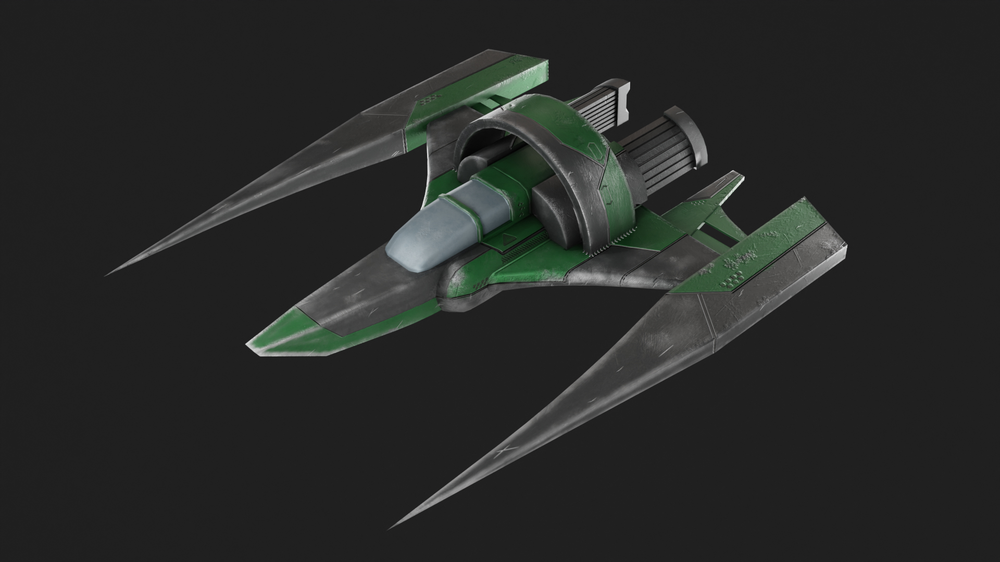

Fighter Jet
Skills
Blender, Substance Painter, Unity
Time
June 2022 - July 2022
Contributions
Created a fighter jet model for use as a game asset
context
//01As a part of my co-op in the Immersive Tech Uncontained project, I was tasked with making a fighter jet that could be implemented into Unity for use in a game. This project was guided by my supervisor, Ken Ha.
Process
//02I first started by gathering references of fighter jets and aircrafts. These images included real aircraft, concept sketches, and other ideas from around the internet.
Based on these sketches, I started making some thumbnail sketches to ideate on the shape of the jet. Afterwards in Blender, I began kitbashing together some prototype jet models, blocking out some low poly concepts, and doing some shape explorations with the models.
Based on these sketches, I started making some thumbnail sketches to ideate on the shape of the jet. Afterwards in Blender, I began kitbashing together some prototype jet models, blocking out some low poly concepts, and doing some shape explorations with the models.
From here, Ken gave me a concept sketch for the fighter jet that I then modeled in Blender. I kept the topology to quads and tris and reduced the polygons as much as I could while still retaining details.
From here, I moved onto using Adobe Susbtance Painter to texture the model. As this was my first time using Substance Painter, I spent a bit of time getting used to the tools and drafting different ideas about how I would like the jet to appear.
After getting used to the tools and settings, I moved onto figuring out what the fighter jet should look like. Using a basic round brush and a negative height, I carved out some paneling detail and decals along the mode. Then, I decided on two colours - a base dark grey, and a secondary green that I masked onto certain areas.
I recieved some feedback and based on it, began adding in some impact and damage details along areas that would recieve wear and tear damage if the fighter jet were to by flying in battle. I also went back and modified the geometry and UVs for certain areas that appeared to stretch.
I also made a high poly model and bake mapped it for the low poly model's texutre. After some more pointers and refining, I ended up with a fully textured, game ready fighter jet!
Result
//03Reflection
//04I quite enjoyed the process of making the fighter jet. I learnt some new tools to add to my skillsets, and am happy with the final outcome. I was able to use Substance Painter, which I had been looking into trying out for a little while, and found that I quite enjoyed the process of texturing. I also practiced some of my topology skills and my understanding of UVs for a game ready asset.